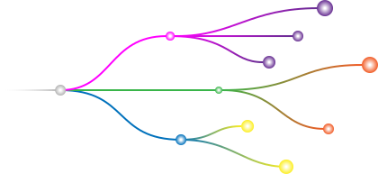

Research at a glance 🔍
The core of Gami’s research lied in two distinct places. One, being the fundamentals of computational design, specifically, parametricism. The other core research category lied in understanding traditional origami practices, this required a lot of hand and scaled modeling to understand how rigid structure could be created from 2D patterns.
Utilizing a Parametric Methodology
Traditional computational methods, like generative design, rely on code to drive the form of an object. Gami utilizes a parametric ideology which allows designers to make overarching changes to their design in real-time.
This parametric methodology allowed me to maintain my control over the form of Gami, while also being able to easily manipulate the scale and fit of whatever form factor the user might desire. This computational usage represents one component of Gami’s creation. Parametric design was primarily used here to facilitate the production of the many offshoots and form factors Gami can take. The other primary ideation method revolved around origami inspired direct modeling to discern the form that Gami would take.